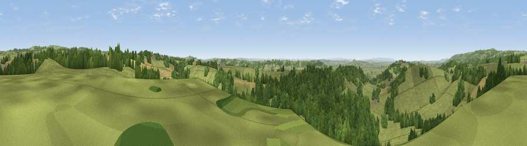

Viewpoint near Croscombe
#9001 in England · top 16% of its area beats it · near CroscombeThe view, rendered

A 360° render of this exact spot computed from the terrain model, tree cover and land cover — summer colours, afternoon light, calibrated against photographs of famous viewpoints. Real trees, hedges and buildings will differ in detail.
The panorama
Grey silhouette: terrain skyline in each direction (720 bearings, Earth curvature and refraction included). Dashed green: skyline with trees (+15 m) and buildings (+8 m) as obstacles. Blue strip: how far the ground is visible on each bearing.
Where the view opens
Wedge length = distance to the farthest visible ground on that bearing (vegetation-aware). Rings at 10, 25 and 50 km.
What fills the view
55% grassland · 37% woodland · 8% cropland
Angular shares of the visible panorama (visual magnitude), not map area. Landscape diversity 0.40 (0–1 Shannon).
Key numbers
More beautiful places nearby
The staircase of upgrades: each row has a higher view potential than everything closer. Driving times are estimates from straight-line distance, calibrated against real road routing — check an actual route before setting out.
| Place | Direction | Drive | Score |
|---|---|---|---|
| Viewpoint near North Wootton | W · 4 km | ~9 min | 67.9 |
| Viewpoint near Binegar | NNE · 5 km | ~11 min | 69.2 |
| Viewpoint near West Horrington | NNW · 6 km | ~12 min | 70.9 |
| Viewpoint near Oakhill | ENE · 6 km | ~13 min | 71.3 |
| Viewpoint near West Horrington | NNW · 7 km | ~14 min | 73.2 |
| Viewpoint near Wookey Hole | NW · 7 km | ~15 min | 73.5 |
| Glastonbury Tor | WSW · 9 km | ~18 min | 75.8 |
| Viewpoint near Lamyatt | SE · 10 km | ~20 min | 77.8 |
51.18262, -2.58743 · source: screening · position refined by local search. Computed location — check access rights before visiting.